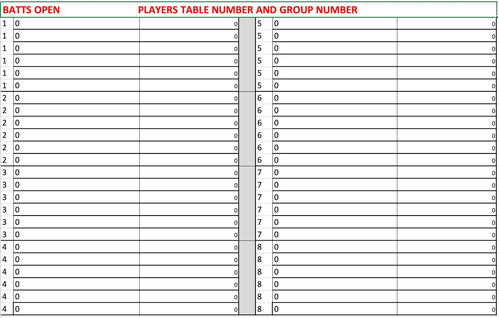

The draw is provisional and can change if players withdraw
Players will be divided into 6 groups, each consisting of 6 players. All 36 players will advance from their respective groups to the knockout rounds, where they will be placed into bands 1, 2, or 3.
If insufficient entries are received in any gender category a mixed event will be held.
